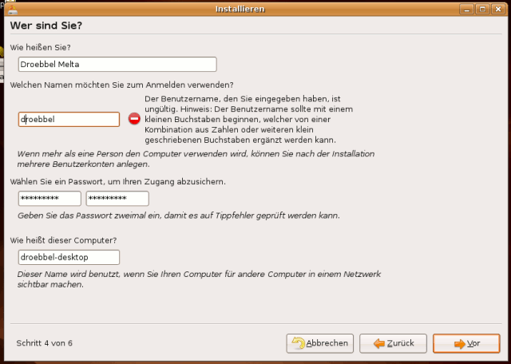
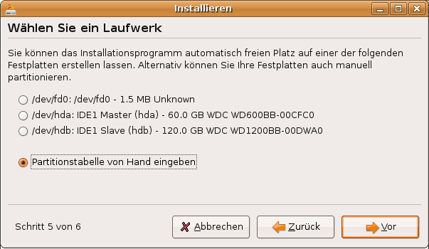
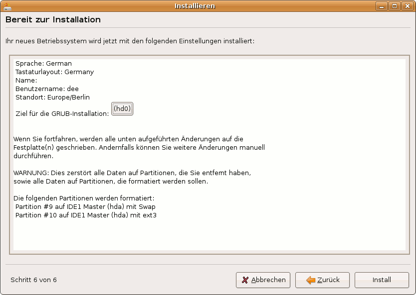

Ubuntu Installation (Dapper)
Archivierte Anleitung
Dieser Artikel wurde archiviert, da er - oder Teile daraus - nur noch unter einer älteren Ubuntu-Version nutzbar ist. Diese Anleitung wird vom Wiki-Team weder auf Richtigkeit überprüft noch anderweitig gepflegt. Zusätzlich wurde der Artikel für weitere Änderungen gesperrt.
Dieser Artikel beschreibt die Installation von Ubuntu 6.06 LTS ("Dapper Drake") mit Hilfe der "Desktop-CD". Im Gegensatz zur "Alternate-CD" gibt es hier einen rein grafischen Installer. Die CD ist so ausgelegt, dass man mit wenig Handgriffen ein System installieren kann. Das führt aber dazu, dass die Entscheidungsgewalt des Benutzers eingeschränkt ist. Diese Installationsanleitung kann sowohl für Ubuntu 6.06 als auch für 6.10 verwendet werden, da der Installer identisch ist.
Eine Installationsanleitung für Ubuntu 7.04 Feisty Fawn, Ubuntu 7.10 Gutsy Gibbon und Ubuntu 8.04 Hardy Heron findet man hier.
Voraussetzungen¶
Diese Installationsvariante benötigt einen Computer mit mindestens 256 MB Arbeitsspeicher. Für Systeme mit weniger Arbeitsspeicher sollte die "Alternate-CD" verwendet werden, deren Installationsprogramm ohne grafische Oberfläche auskommt.
Vorbereitungen¶
Wenn sich auf dem Computer schon ein Betriebssystem (wie beispielsweise Windows, Mac OS oder ein anderes Linux-System) oder wichtige Daten befinden, sollte von den wichtigen Daten unbedingt eine Sicherung erstellt werden. Wie bei jeder Veränderung am Computer kann immer auch etwas schief gehen.
Herunterladen¶
Zuerst sollte die CD heruntergeladen werden. Auf dieser Seite im Wiki sind die Links und weitere Informationen zu den Rechner-Architekturen zu finden oder direkt über den ubuntuusers Download Assistenten zu beziehen. Das heruntergeladene CD-Abbild ist mit einem geeigneten Programm auf CD-ROM zu brennen. Man kann sich auch eine oder mehrere CDs kostenlos zuschicken lassen  .
.
Man sollte prüfen, ob das BIOS das Booten von CD unterstützt und ob die Bootreihenfolge stimmt. Informationen zu diesem Schritt findet man auch in diesem PDF-Dokument  .
.
Installation¶
Start der Live-CD¶
Beim Start des Computers muss die Ubuntu-CD in das CD-Laufwerk eingelegt sein.
Hinweis:
Wenn der Computer trotz eingelegter CD wie gewohnt startet, ist er nicht für den Start von CD eingerichtet. Diese Einrichtung wird im BIOS vorgenommen. Die genaue Vorgehensweise dafür verrät die dem Computer oder Mainboard beiliegende Anleitung, oder dieses Dokument. Meist gibt es auch eine Taste, mit der sich beim Start ein Laufwerk auswählen lässt. Dies ist beispielsweise F8 oder F12 .
Es erscheint der Ubuntu-Startbildschirm. Um in deutscher Sprache fortzufahren, drückt man hier F2 und wählt mit den Pfeiltasten "Deutsch". Danach wird Ubuntu mit der Auswahl "Ubuntu starten" und ⏎ gestartet.
Hinweis:
Sollte es Probleme mit dem Grafiktreiber geben, man zum Beispiel gar keine Anzeige erhält, dann kann die Auswahl von "Ubuntu im sicheren Grafikmodus starten" helfen. Falls auch das nicht nützt, findet man unter Ubuntu-CD Problembehebung weitere Tipps.
Start des Installationsprogramms¶
Auf der Arbeitsfläche befindet sich ein Icon mit der Beschriftung "Install". Das Installationsprogramm wird durch einen Doppelklick hierauf gestartet.
Sprachauswahl¶
Zuerst kann nun falls nötig die Spracheinstellung korrigiert werden.
Zeitzone¶
Im nächsten Schritt wird die eigene Zeitzone eingestellt. Dazu wählt man eine Stadt aus, die sich in der eigenen Zeitzone befindet. Die Voreinstellung "Berlin" ist vermutlich korrekt. Weiter mit "Vor".
Tastatureinstellung¶
Auch die Voreinstellung für die Tastatur muss man nur ändern, wenn man eine fremdsprachige oder beispielsweise eine DVORAK-Tastatur verwendet.
Benutzerangaben¶
Nun müssen einige Daten zum Hauptbenutzer des Computers eingegeben werden. Dieser Nutzer kann nach Eingabe seines Passworts wichtige Systemeinstellungen verändern. Das Passwort sollte sorgfältig gewählt werden. Alle Wörter, die auch in einem Wörterbuch auftauchen, können leicht erraten werden und sind deshalb nicht gut geeignet. Sehr gut sind dagegen willkürliche Folgen von Zahlen, Groß- und Kleinbuchstaben, die allerdings schwer zu merken sein können. Das Benutzerkürzel für die Anmeldung am System darf nur Kleinbuchstaben enthalten. 
Weiter mit "Vor".
Partitionierung¶
Nun kann man wählen wie die Festplatte des Computers aufgeteilt werden soll. Folgende Aktionen sind möglich:
Verkleinerung einer bestehenden Partition
Gesamtes Laufwerk löschen
Partitionstabelle von Hand eingeben
Achtung!
Bei der Desktop-CD kann man nicht selber auswählen wohin Grub installiert wird. Dieser landet immer im Master-Boot-Record. Wer Grub woanders hin installieren möchte, muss die Installation über die Alternate-CD vornehmen.

Verkleinerung einer bestehenden Partition¶
Enthält eine bestehende Partition freien Speicher, so kann diese durch die Auswahl dieses Menüpunktes und durch Verschieben des Reglers darunter verkleinert werden. Der daraufhin entstehende Platz wird für Ubuntu benutzt.
Achtung!
Bei der Verkleinerung von Windows-Laufwerken mit FAT32- oder NTFS-Dateisystem ist eine vorherige Defragmentierung zwingend erforderlich! Andernfalls kann Ubuntu die Partition entweder nicht verkleinern oder es kommt zu Datenverlust.
Gesamtes Laufwerk löschen¶
Wenn sich noch kein anderes Betriebssystem auf dem Computer befindet oder wenn man eine Festplatte mitsamt allen Daten löschen will, wählt man am besten "Gesamtes Laufwerk löschen". Ubuntu übernimmt hier die Einrichtig der Root- und Swap-Partition.
Partitionstabelle von Hand eingeben¶
Die manuelle Partitionierung wird mit Hilfe des Programms GParted vorgenommen. Hinweise zu sinnvollen Aufteilungen finden sich unter Partitionierung. Wichtig sind vor allem eine Root-Partition und eine für Swap.
Nach Beenden von gParted werden die verfügbaren Partitionen verschiedenen Verwendungen zugeordnet. Wichtig sind die Einhängepunkte (Mount-Points) / und swap. Man sollte die beiden Partitionen durch Setzen des Hakens rechts Neu formatieren.
Alle anderen Partitionen kann man ebenfalls einhängen, indem man bei Einhängepunkt einen Ort angibt. Ubuntu bindet Partitionen normalerweise nach /media/name ein. Sie werden dann auch mit dieser Bezeichnung auf dem Desktop angezeigt.
Hinweis:
Ausnahmen sind hier FAT32- und NTFS-formatierte Datenträger, die als Namen nicht den Einhängepunkt, sondern das unter DOS vergebene Label tragen.
Weiter mit "Vor".
Zusammenfassung¶
Am Ende werden die gewählten Einstellungen noch mal angezeigt. Hier kann man auch noch mal kontrollieren, welche Partitionen zur Formatierung ausgewählt wurden. Zusätzlich kann man hier seit Edgy Eft angeben, wohin GRUB installiert werden soll.

Ein Klick auf "Install" installiert Ubuntu dann endgültig, was je nach Geschwindigkeit des Systems eine Weile dauern kann.
Neustart¶
Nach der Installation wird man gefragt, ob man die Live-CD weiter nutzen oder neu starten möchte. Sobald man alles erledigt hat, kann man hier neu starten. Wichtig ist, dass man die Installations-CD vor dem PC-Start aus dem Laufwerk heraus nimmt. Sonst wird eventuell statt von dem neu installierten Ubuntu wieder von ihr gestartet.
Nach der Installation¶
Ubuntu ist zwar direkt nach der Installation bereits vielseitig verwendbar, aber aus verschiedenen Gründen muss an vielen Stellen oft nachgeholfen werden. Wie man am besten dabei vorgeht, wird in den ersten Schritten erklärt.
- Erstellt mit Inyoka
-
 2004 – 2017 ubuntuusers.de • Einige Rechte vorbehalten
2004 – 2017 ubuntuusers.de • Einige Rechte vorbehalten
Lizenz • Kontakt • Datenschutz • Impressum • Serverstatus -
Serverhousing gespendet von